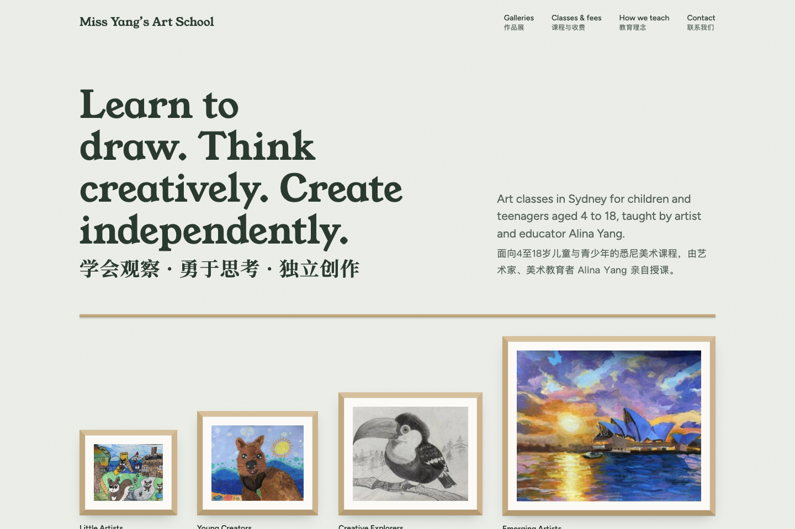
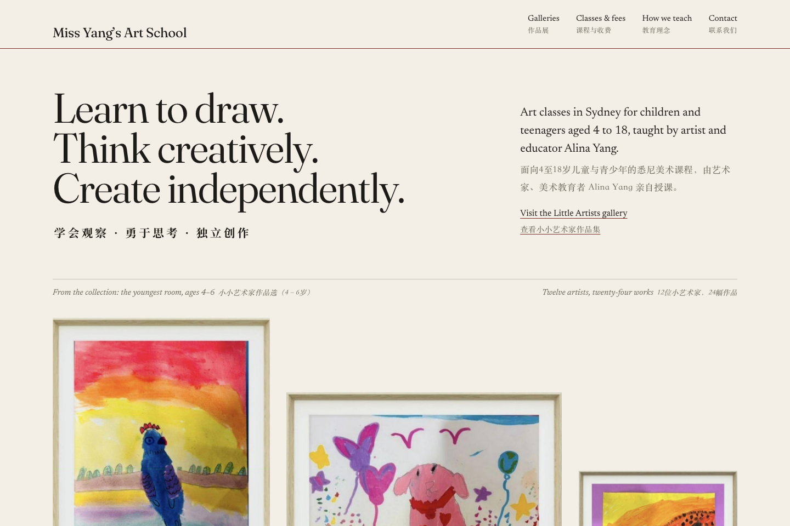
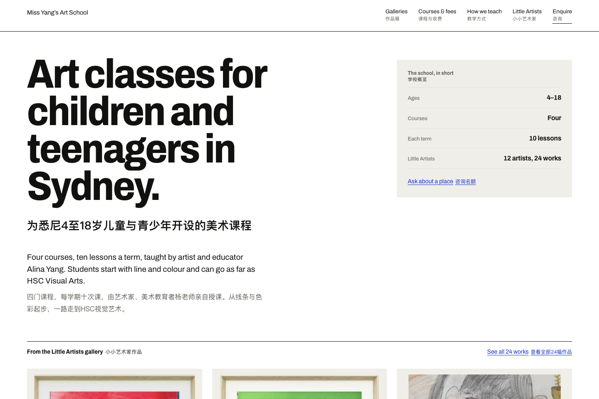
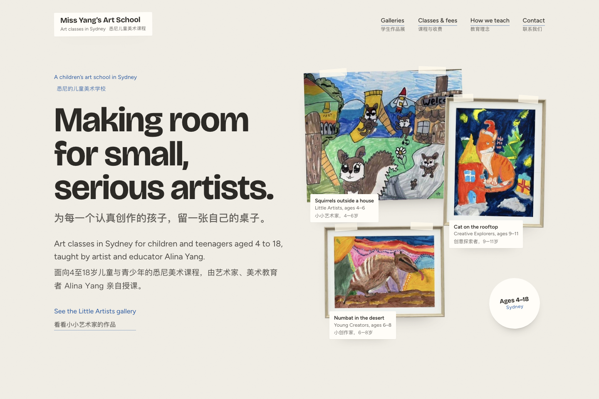
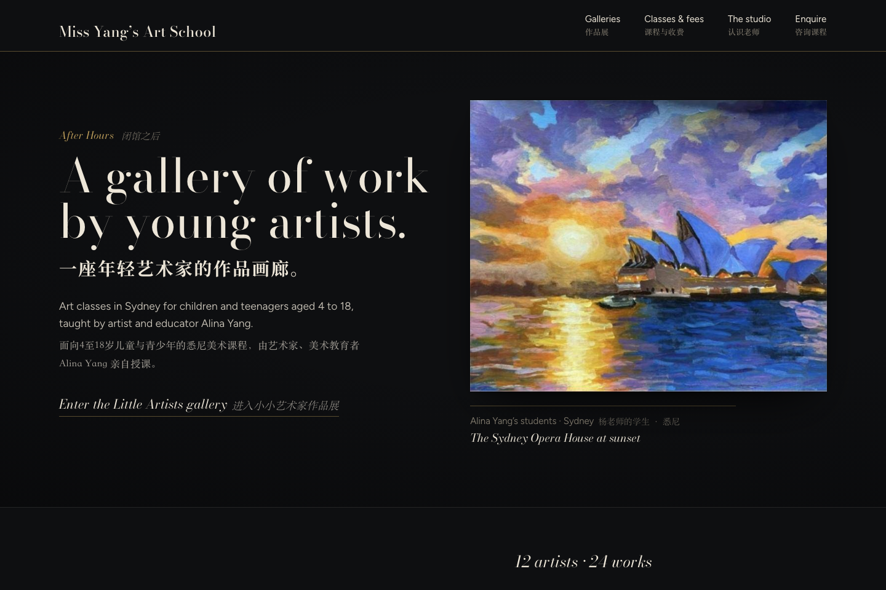
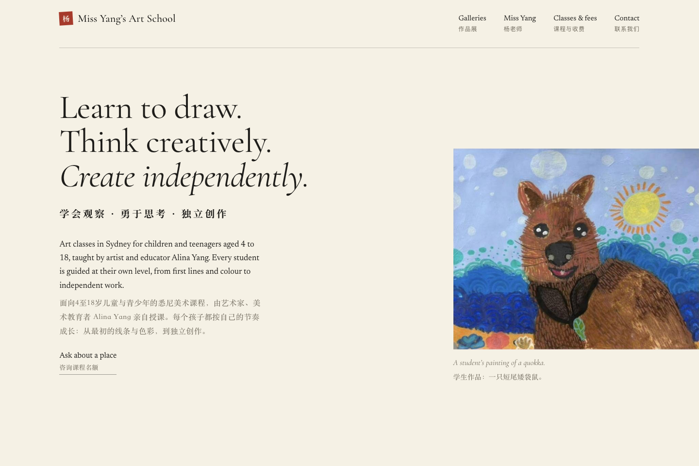
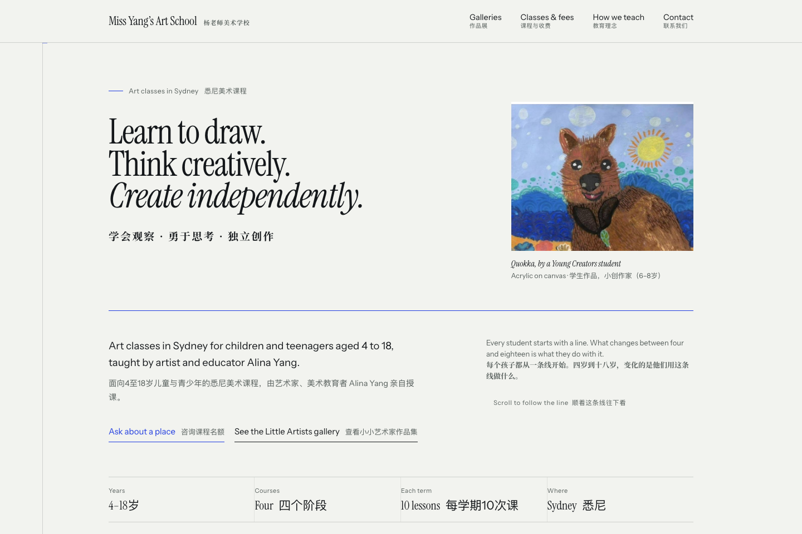
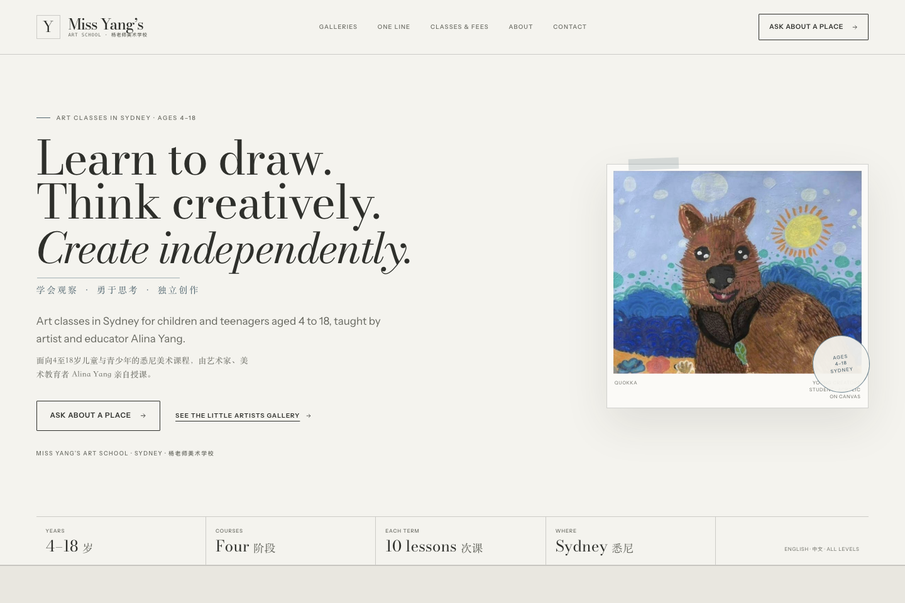

Eight ways to show the same school.
One school, one set of decisions, one collection of student artwork. Below are eight complete versions of the two-page site: the original handover build, then seven directions each built around a different idea of how a small Sydney art school should present itself to parents.
Every folder is a finished website: two pages, local fonts and images, no build step and no network connection needed. Open any of them, compare, then keep the one that sounds most like Miss Yang — or take pieces from several.
同一所学校，同一批学生作品，八种不同的呈现方式（原版加七个新方向）。每个文件夹都是一个完整的两页网站，字体与图片全部本地存放，无需联网，直接打开即可查看。
- Two pages each
- One original + seven directions
- 12 Little Artists · 24 works
- English first, then 中文
- All assets local
- No build step
- Works from
file://
-
00
The Original 原稿
versions/00-original
The handover site, unchanged: a sage “growth wall”, oak frames with white mats, Young Serif headings, and a hero that hangs four works along a picture rail at ages four, six, nine and twelve. Every bilingual line the later directions were rewritten from started here, along with the fee table and the Little Artists gallery.
The reference point. Calm, warm, and the only version written before the redesign brief.
- Palette
- wall pine sage oak
- Type
- Young Serif · Figtree · Noto Serif SC
- Feels like
- A sage gallery wall, oak frames, white mats

Home · 1440 px00 / 08 -
01
The Monograph
versions/01-atelier
A printed catalogue about a painter-teacher. Fraunces sets the statement, chapter numerals hang in the margin, and each student work is captioned like a plate in an exhibition catalogue. The fee table is a printed schedule, not a widget.
Quiet, literary, unhurried. For parents who read before they enquire.
- Palette
- paper ink stone oxblood
- Type
- Fraunces · Newsreader · Noto Serif SC
- Feels like
- A studio monograph on uncoated paper

Home · 1440 px01 / 08 -
02
The Prospectus
versions/02-prospectus
The school as a clear document. A large statement, one ink-black facts panel, and the course-and-fee table given most of the page. Archivo in two widths keeps the grid taut and the numbers aligned.
Direct and legible. For parents comparing three schools in one evening.
- Palette
- white ink signal blue grey
- Type
- Archivo variable · Noto Serif SC
- Feels like
- A well-set school prospectus

Home · 1440 px02 / 08 -
03
The Studio Table
versions/03-scrapbook
The classroom as a working table: photographs taped down at a slight angle, a growing wall of work, a fee slip pinned to the page. Bricolage Grotesque and marigold keep it playful without turning it childish.
Warm and hands-on. For parents of four- to seven-year-olds who want to see the room, not the brochure.
- Palette
- paper charcoal pencil blue marigold
- Type
- Bricolage Grotesque · Figtree
- Feels like
- The pinboard above the drying rack

Home · 1440 px03 / 08 -
04
After Hours
versions/04-gallery-night
The site as a gallery after closing: a dark room, one work under a pool of warm light, museum plates, a hanging rail. Bodoni Moda carries the display voice and gilt draws the only rules on the page.
Still and serious. Built for the teenage years, and for a school that wants the work to look like it belongs on a gallery wall.
- Palette
- night room chalk gilt
- Type
- Bodoni Moda · Figtree · Noto Serif SC
- Feels like
- A small gallery open late

Home · 1440 px04 / 08 -
05
Ink & Paper 墨与纸
versions/05-ink
Ink on rice paper. Three chapters run down the page — 观 observe, 思 think, 创 create — with vertical Chinese markers and a seal for 杨; Cormorant carries the English. The most Chinese of the five, without making the English second class.
For families who want 中文 and English to feel equally at home on the page.
- Palette
- rice ink stone seal
- Type
- Cormorant Garamond · Newsreader · Noto Serif SC
- Feels like
- A scroll with a red seal at the corner

Home · 1440 px05 / 08 -
06
One Line 一条线
versions/06-line
The school drawn as a single cobalt line. It starts under the headline, runs down the gutter, becomes the four age stages as you scroll sideways through them, marks the fee table and the project notes, and ends in a loop under the email address. Instrument Serif and Instrument Sans stay quiet so the line can carry the message.
The animated one. Motion with a still, readable fallback: with JavaScript off or reduced motion on, the line is simply drawn and the four stages stack.
- Palette
- paper ink graphite cobalt
- Type
- Instrument Serif · Instrument Sans · Noto Serif SC
- Motion
- GSAP + ScrollTrigger + DrawSVG, Lenis, all vendored locally
- Feels like
- A pencil line being drawn in front of you

Home · 1440 px06 / 08 -
07
A Quiet Room 安静的房间
versions/07-gallery
The same scroll-driven line as 06, calmed down and warmed up: a softer paper, a slate-blue accent, Bodoni Moda for the display and a taped photograph with a small studio stamp. It is the version that tries least hard — a quiet room where the work is the loudest thing on the page.
Content and motion carried forward from 06, with a different temperament: one line instead of many devices, an age rail that still pins, and a gallery viewer that morphs the work into a viewing room.
- Palette
- paper ink slate clay
- Type
- Bodoni Moda · Instrument Sans · Songti for Chinese
- Motion
- GSAP + ScrollTrigger, native View Transitions in the gallery
- Feels like
- A quiet room, a taped print, and one line on the wall

Home · 1440 px07 / 08
What every version keeps
The fixed decisions from the handover were treated as fixed in all eight: the school name with its curly apostrophe, English first and Chinese second, the four gallery names, the four course names, the fees per lesson and per term, the twelve Little Artists in Canva order with Chloe Wang at seven, the Signature Art Projects framing — and no achievements section. No stock images, no remote fonts, no invented students or dates.
Version 00 is the handover site exactly as delivered; it is copied in, not edited. The other seven are additions.
How to open them
Open index.html inside any folder — both pages work straight from the file system. To follow folder links such as little-artists/, serve the folder:
cd versions/01-atelierthenpython3 -m http.server- Visit
http://localhost:8000
Each version is self-contained: its own HTML, CSS, JavaScript, fonts and images. Nothing loads from another website.
Versions 06 and 07 carry the motion layer, and both keep it optional. 06 vendors GSAP 3.15.1, ScrollTrigger, DrawSVGPlugin and Lenis 1.3.27; 07 uses GSAP 3.15.1 + ScrollTrigger and native View Transitions for the gallery. All of it sits inside each version’s own assets/vendor/ with the licences, so there is still no CDN and no build step. If scripts are blocked or the visitor prefers reduced motion, both show the same content unanimated, with the four stages stacked.